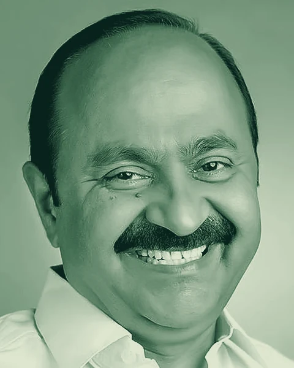
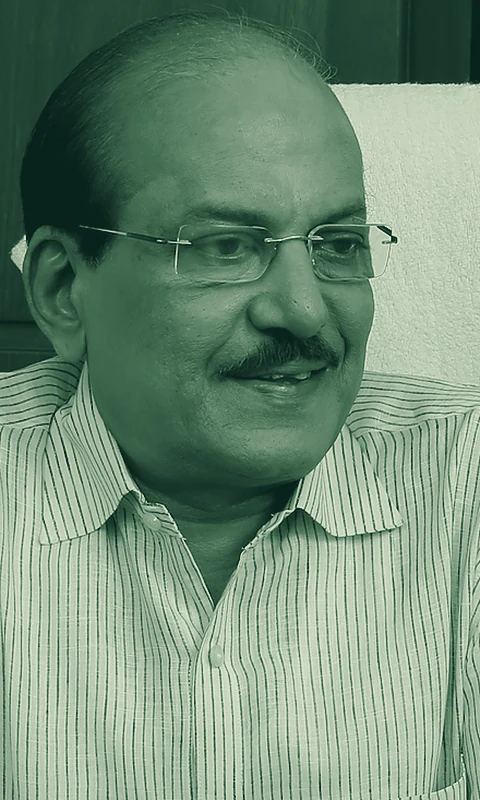

Government of Kerala
The people
convening the conclave.
Bio Connect 4.0 is sanctioned to Kerala Life Sciences Industries Park by Government Order, which also constituted three committees to plan, monitor and deliver the conclave.
Conclave
08-09 October 2026
Venue
Hyatt Regency Trivandrum
Convened by
KLIP, under KSIDC
Sanctioned by
Government of Kerala
01
Government leadership
Backed at the highest level of the State.
Bio Connect is an initiative of the Industries Department, delivered through KSIDC and Kerala Life Sciences Industries Park.

02
Committees constituted
Three committees, one conclave.
Industry, research and government sit together across all three - from strategic guidance to the running of the two days themselves.
Committee 01
Advisory Committee
Chaired by the Hon'ble Minister for Industries, and drawing on senior government, research and industry leadership.
14 members
- Chairman Hon'ble Minister for Industries Government of Kerala
- Member Additional Chief Secretary Industries Department
- Member Additional Chief Secretary Health Department
- Member Chairman KSIDC / KLIP
- Convenor Managing Director KSIDC / KLIP
- Member Board of Directors KLIP
- Member Executive Vice President Kerala State Council for Science, Technology and Environment
- Member Chairman & Managing Director HLL Lifecare Ltd
- Member Mr. Aju Jacob Managing Director, Synthite Group
- Member Mr. Thomas John Managing Director, Agappe
- Member Mr. John Kuriakose Founder, DentCare
- Member Director Institute of Advanced Virology, Government of Kerala
- Member Director CSIR - National Institute for Interdisciplinary Science and Technology
- Member Chief Executive Officer KLIP
Committee 02
Organising and Monitoring Committee
Plans, organises and monitors the event.
9 members
- Member Additional Chief Secretary Industries Department
- Member Chairman KSIDC / KLIP
- Member Managing Director KSIDC / KLIP
- Member Managing Director KINFRA
- Member Dr. Ramchand C. N. KLIP Board Member
- Member Mr. C. Padmakumar KLIP Board Member
- Member Dr. Sreeraj Gopi KLIP Board Member
- Member General Manager IP Division, KSIDC
- Convenor Chief Executive Officer KLIP
Committee 03
Programme Committee
Executes the conduct of the event.
8 members
- Chairman Managing Director KSIDC / KLIP
- Convenor Chief Executive Officer KLIP
- Member Mr. Biju Deputy General Manager, KSIDC
- Member Mrs. Ambily C. N. Assistant General Manager, KSIDC
- Member Mrs. Saritha S. Manager, KSIDC
- Member Dr. Sunitha Chandran Sector Specialist - Biotechnology, Life Sciences and Pharmaceuticals, KSIDC
- Member Dr. Sony George Sector Specialist - Food Processing and Technology, KSIDC
- Member Mr. Nazeeb K. P. Senior Manager, KLIP
Source: G.O.(Rt) No. 879/2026/ID, Industries Department, Government of Kerala, dated 03.08.2026.
Industries Minister portrait: Shihab tharayil, CC BY-SA 4.0, cropped and toned; the adaptation is shared under the same licence.
Working with the committees
Partner with
Bio Connect 4.0.
For speaking slots, exhibition space, sponsorship or institutional collaboration, write to the organising team.
Contact event team